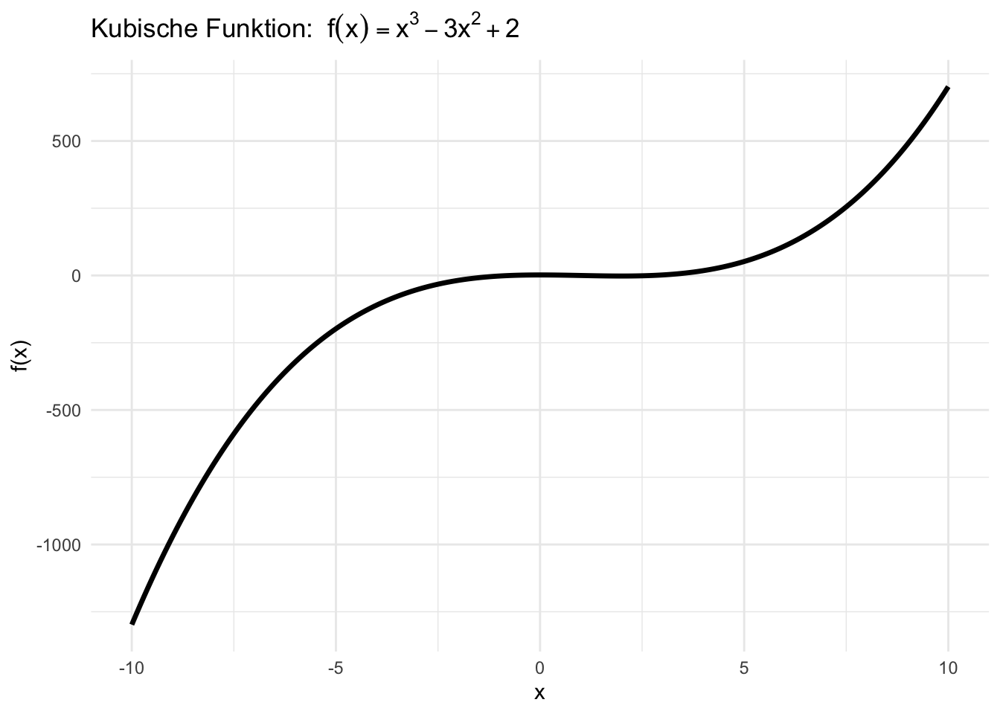

TEMPLATES - DELETE
Welcome to the Polars cookbook for R users. The goal of the cookbook is to provide solutions to common tasks and problems in using Polars with R. It allows R users using their usual packages to quickly get the syntax required to use Polars with R.
It is structured around side-by-side comparisons between polars, R base, dplyr, tidyr and data.table.
This book is not a substitute for the official documentation of the rpolars project which is the definitive reference on the subject. It is simply intended to illustrate my use of Polars with R and can be a complementary to the official Polars documentation.
Inhalt dieses Jahres
This cookbook’s website is built by GitHub Actions, which runs the code every time we make a change, ensuring code correctness and reproducibility. The current build status as follows:

To run this cookbook’s code, you can copied and pasted the code into the R command window if you want to see them in action.
What is Polars ?
Polars is a very fast and elegant dataframe library that does the same sort of thing as the main data manipulation packages in R including dplyr and data.table.
Most of this book is structured examples of Polars, dplyr and data.table idiomatic code, with comments on the API and performance of the three.
Who is this for?
This is not a beginner’s introduction to data programming, though you certainly don’t need to be an expert to read it. If you have some familiarity with any dataframe library, most of the examples should make sense, but if you’re familiar with dplyr or data.table they’ll make even more sense because all the Polars code is accompanied by the equivalent code.
For users of Python and in particular Pandas, you can consult this excellent book which was the inspiration for the one you are reading now.
Contributing
This book is free and open source, so please do open an issue if you notice a problem!
Welcome
- Welcome to the Julia workshop for Data Science!
- The goal for the workshop is to highlight the main features that make Julia an attractive option for data science programmers
- The workshop is intended for any data scientist with experience in R and/or python who is interested in learning the attractive features of Julia for Data Science. No knowledge of Julia is required.
- Workshop materials in the github repository julia-workshop
Learning Objectives for Tutorial
At the end of the tutorial, participants will be able to:
- Identify the main features that make Julia an attractive language for Data Science
- Set up a Julia environment to run their data analysis
- Efficiently handle datasets (even across different languages) through Tables.jl and Arrow.jl
- Fit (generalized) linear mixed models with MixedModels.jl
- Communicate across languages (Julia, R, python)
Intended audience and level: The tutorial is intended for any data scientist with experience in R and/or python who is interested in learning the attractive features of Julia for Data Science. No knowledge of Julia is required.
Schedule
| Time | Topic | Presenter |
|---|---|---|
| 11:00 - 11:30 | Session 1: Get Started with Julia | Claudia Solis-Lemus |
| 11:30 - 12:30 | Session 2a: Data Tables and Arrow files | Douglas Bates |
| 12:30 - 1:00 | Session 2b: Interval Overlap | Douglas Bates |
| 1:00 - 2:00 | Lunch break | |
| 2:00 - 2:30 | Session 3a: Linear Mixed-effects Models | Douglas Bates |
| 2:20 - 3:00 | Session 3b: Generalized Linear Mixed Models | Douglas Bates |
| 3:00 - 4:00 | Session 4: Hands-on exercise | Sam Ozminkowski and Bella Wu |
| 4:00 - 4:15 | Coffee break | |
| 4:15 - 5:00 | Presentation of selected participants’ scripts and Q&A | |
| 5:00 - 5:30 | Session 5: Other important Data Science tools | Claudia Solis-Lemus |
| 5:30 - 6:00 | Session 6: Conclusions and questions | Claudia Solis-Lemus |
In preparation for the workshop
Participants are required to follow the next steps before the day of the workshop:
Git clone the workshop repository:
git clone https://github.com/crsl4/julia-workshop.gitInstall Julia. The recommended option is to use JuliaUp:
Windows:
winget install julia -s msstoreMac and Linux:
curl -fsSL https://install.julialang.org | shHomebrew users:
brew install juliaup
After JuliaUp is installed, you can install different Julia versions with:
juliaup add release ## installs release version
juliaup add rc ## installs release candidate version
juliaup st ## status of julia versions installed
juliaup default rc ## make release candidate version the default- Choose a dataset along with a script to analyze it written in another language (R or python) as we will spend part of the workshop translating participants’ scripts to Julia.
\[ \sum_{i=1}^{\infty} \frac{i}{i+1} \rightarrow \int \frac{e^x}{\pi} \]
Blablabla